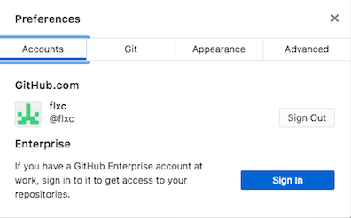
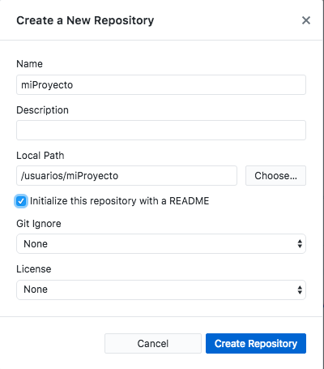
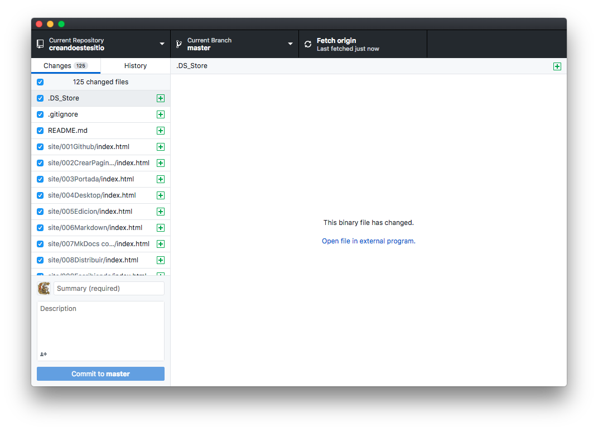
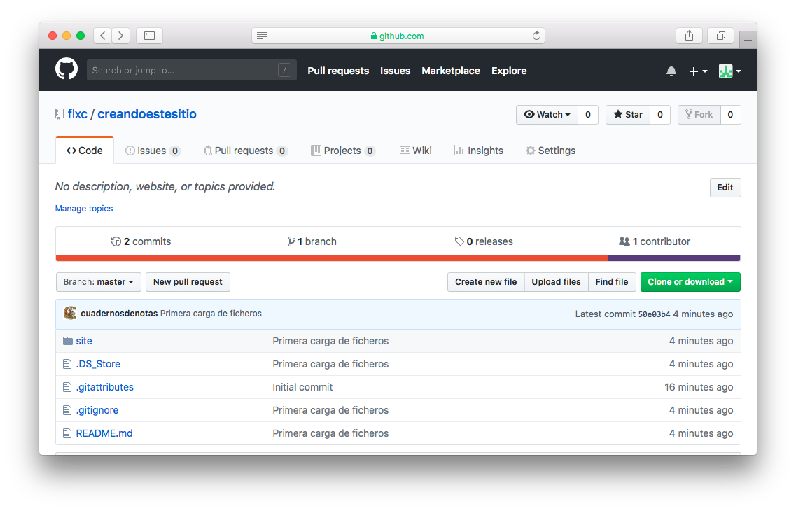

Distribuyendo el sitio web
Una vez finalizada la construcción del sitio web, vamos a publicarlo en GitHub. Podemos subir los documentos de tres formas:
-
Entrando en GitHub, en el repositorio de destino, y pulsando en el botón
[Upload Files]. -
Sustituyendo el comando
mkdocs buildpormkdocs gh-deploy, que genera y sube el sitio web en un solo paso. Hay que configurar las carpetas de nuestro proyecto con los archivos de control git. -
Usando Github Desktop para subir los archivos tras ejecutar
mkdocs build. Esto permite automatizar la gestión de los archivos de control git.
Nota:
Git es el software utilizado para controlar los cambios y coordinar que los contenidos en nuestro entorno local y GitHub estén en sintonía.
Vamos a optar por la tercera de las soluciones mencionadas. Comenzaremos por borrar la carpeta site con los resultados de la última compilación del proyecto. Utilizaremos GitHub Desktop para crear una nueva carpeta para este propósito, que incluya dichos archivos de control.
Iniciando Github Desktop
Tras poner en marcha Github Desktop, pulsamos sobre el menú Preferences y seguidamente sobre el botón [Sign in] para conectarnos a nuestra cuenta de GitHub. Esta opción también nos sirve para desconectarnos pulsando en [Sign out]:

La carpeta con el sitio web generado
El primer paso será crear una carpeta que sustituya a /site e incorpore los archivos de control git. La daremos el mismo nombre que el repositorio de destino en GitHub. Si el proyecto en nuestra máquina local también se llama así, entonces tendremos una carpeta dentro de otra con el mismo nombre:
miProyecto/mkdocs.yml miProyecto/docs/index.md miProyecto/docs/capitulo1.md miProyecto/docs/capitulo2.md miProyecto/miProyecto/...archivos html a subir...
Para crear la carpeta, pulsamos sobre el menú File > New Repository de Github Desktop. Introducimos el nombre del proyecto y la carpeta donde se ubicará el sitio web generado:

Pulsamos en el botón [Create repository].
Se ha creado una nueva carpeta dentro de la del proyecto, con el mismo nombre que este. La vamos a utilizar en lugar de /site como destino de la compilación del sitio web. Contiene varios archivos ocultos para controlar la sincronización con GitHub: .git, .gitignore, etc.
Para designar a la nueva carpeta como destino de los resultados de la compilación, debemos modificar el archivo de configuración mkdocs.yml, añadiendo una nueva línea de texto:
site_dir: miProyecto
El parámetro site_dir permite establecer una carpeta destino para la generación del sitio web. El valor por defecto es site.
Volvemos a ejecutar la compilación:
mkdocs build
Y en la carpeta destino, además de los archivos .git, .gitignore, etc. que Github Desktop había creado, ahora tenemos index.html y todo lo demás.
Subiendo los resultados
Seguidamente volvemos a Github Desktop y pulsamos en el menú Repository > Settings. En el apartado Ignored files, introducimos la lista de archivos que no queremos subir, si hubiera alguno.
Finalmente pulsamos en el botón [publish]. Nos aseguramos que en nuestra cuenta de GitHub no hay ya un repositorio con ese nombre.
Nota:
Si obtenemos un mensaje:
Cannot push these commits as they contain an email address marked as private on GitHub.
… debemos entrar en la configuración de nuestro usuario GitHub, apartado e-mail, y desmarcar Block command line pushes that expose my email
En el panel principal de GitHub Desktop aparece la lista de archivos a subir. En el recuadro “Summary required” introducimos una descripción corta de la operación a realizar

Y pulsamos en el botón Commit to master. Seguidamente, en la barra superior pulsamos en el enlace Push origin, lo que ejecuta la transmisión.
Activar Github Pages
Desde el navegador web, entramos en nuestra cuenta de GitHub. Véase que se ha creado un nuevo proyecto:

Pulsamos en el botón settings y, en el apartado GitHub Pages, seleccionamos la rama master. Al pulsar en el botón [Save] se activará el servicio. Visualizamos las páginas web que hemos subido mediante nombreusuario.giuthub.io/nombreProyecto.
Actualizando el sitio web
Cada vez que introduzcamos cambios en los documentos, volvemos a ejecutar el comando:
mkdocs build --clean
lo que regenera la carpeta con los resultados. Seguidamente reiniciamos GitHub Desktop, donde veremos la lista de los archivos que han sufrido cambios. Pulsamos en [Fetch Origin], introducimos un comentario corto y pulsamos en el botón [Commit to master]. Finalmente pulsamos en [Push origin].
Nombres de dominio
GitHub Pages permite nombres de dominio a la medida para nuestro sitio, si tenemos uno en propiedad. Tenemos que añadir un archivo CNAME en la carpeta principal del proyecto. El archivo debe contener una única línea de texto con el nombre del dominio. Véase el propio archivo CNAME de la documentación de mkDocs.
Si esto no funciona, véase troubleshooting custom domains.